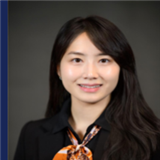
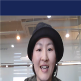

200여 명의 코치 중,
우리 아이와 꼭 맞는 코치를 만나보세요
유아·초등부터 성인까지 지도 경험이 풍부한 코치 12명을 먼저 소개해드려요. 실제 매칭은 무료 레벨테스트 결과와 아이 성향에 맞춰 진행됩니다.

김도이 코치
미국에서 성장·교육받아 원어민급 발음과 구사력을 갖췄고, 국제학교 스피치·발표·디베이팅 수업 경력이 있어요. 유아·초등 파닉스부터 성인 회화까지 1:1로 지도합니다.

박민구 코치
미국 초·중·고 유학 후 산업디자인을 전공했고, 영어 유치원 및 미술교육 경력을 더해 편안한 분위기 속에서 아이가 자연스럽게 말문을 트도록 이끌어요.

임건희 코치
TESOL 자격을 갖추고 영어놀이학교 전임 담임교사로 5년 이상 전연령을 지도했어요. 미술심리상담사 자격도 있어 아이의 정서적 장벽까지 세심하게 살핍니다.

김수경 코치
영어교육 전공 석사이자 미국 초등학교 교사 경력을 가지고 있으며, 어학원을 10년간 직접 운영하며 6세부터 성인까지 회화 중심 커리큘럼을 설계해왔어요.

홍브니엘 코치
캐나다에서 초·중·고를 마치고 통번역사로도 활동한 원어민급 실력자예요. 어학원에서 초등부터 성인까지 두루 지도한 경험으로 발음과 표현을 세심하게 코칭합니다.
김재하 코치
국제학교 IB 과정을 졸업하고 연세대에서 수학했어요. 국제행사 통역 경험까지 갖춰, 편안한 분위기 속에서 초등부터 성인까지 실전 영어를 가르칩니다.
신민옥 코치
미국에서 초중고를 유학하고 TESOL 자격까지 취득했어요. 유치원부터 초등까지 파닉스와 스피킹을 전문으로, 발음·억양 교정에 강점이 있습니다.
임영란 코치
조지타운대 TESOL 과정을 마치고 미국 초등학교에서 근무했어요. 어린이 영어 코디네이터 경력까지 더해, 즐겁게 배우는 수업을 만듭니다.
정민정 코치
TESOL 자격을 갖춘 14년차 베테랑 강사예요. 초등 회화 전문 수업을 다수 진행했고, 성인 회화까지 폭넓게 지도합니다.

강소희 코치
Texas A&M에서 MBA를 마치고 KOTRA 통번역 경력을 쌓았어요. 어학원에서 초등부터 고등까지 100% 영어로 수업하며 미국식 발음을 교정해줍니다.
김예연 코치
캐나다 TESOL 디플로마를 취득하고 현재도 캐나다에 거주 중이에요. 유치부터 중고등까지 실무 중심 회화와 유학 대비 수업에 강점이 있습니다.

오희진 코치
미국과 호주에서 7년을 거주하며 익힌 실전 영어로, 초중고 내신부터 수능·OPIc까지 폭넓게 지도해요. 밝고 편안한 수업 분위기가 강점입니다.
어떤 코치가 우리 아이와 잘 맞을지 궁금하다면?
무료 레벨테스트를 신청하시면, 200여 명의 코치 중 아이의 레벨과 성향에 가장 잘 맞는 코치를 매칭해드려요.
무료 레벨테스트 신청하기